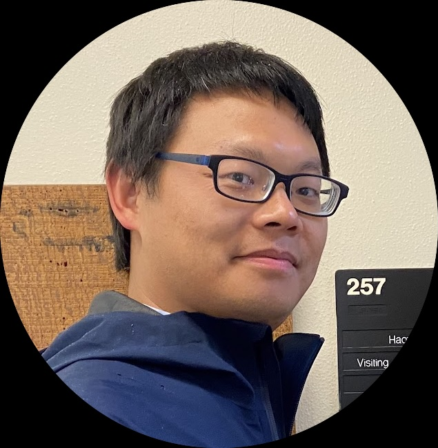
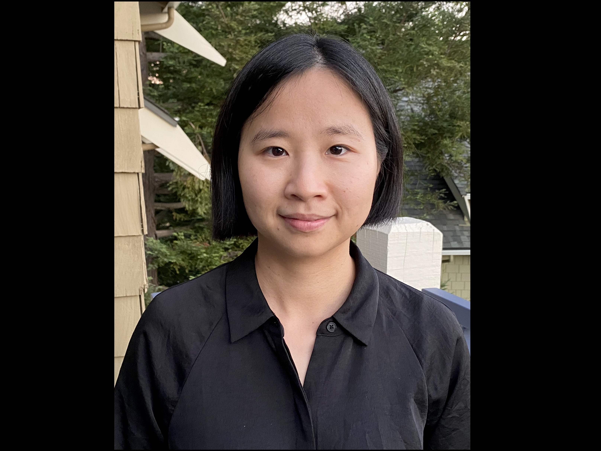

Dr. Haoze Li
Dr. Li works at the intersection of formal semantics, pragmatics, and cross-linguistic typology. His research examines how meaning is structured and communicated across East and Southeast Asian languages, with particular attention to quantification, focus, and question formation. He brings deep expertise in both formal theory and experimental methodology to the lab.

Dr. Jess Hoi-Ki Law
Dr. Law's research focuses on the semantics and pragmatics of multimodal communication — how spoken language, gesture, prosody, and visual context collaborate to build and convey meaning. She draws on corpus methods, behavioral experiments, and formal semantic frameworks to tackle questions that sit at the boundary of language and embodied cognition.

[ Name ]
Postdoctoral ResearcherNTU / UCSC

[ Name ]
PhD CandidateNanyang Technological University

[ Name ]
PhD CandidateUC Santa Cruz

[ Name ]
Research AssistantNTU / UCSC
We are proud of every researcher who has trained with us. Alumni listings will appear here as the lab grows.